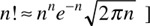
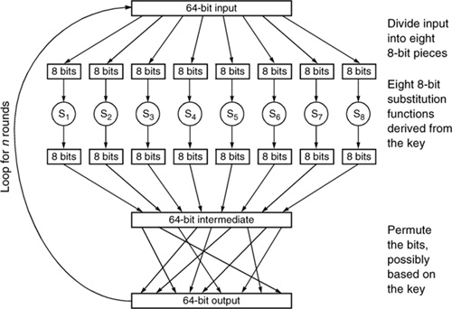

Networking Security Networking Security Networking Security Security Networking Security Networking Security Networking Charlie Kaufman Radia Perlman Mike Speciner Prentice Hall Network Security: Private Communication in a Public World, Second Edition
3.2. Generic Block Encryption
A cryptographic algorithm converts a plaintext block into an encrypted block. It's fairly obvious that if the key length is too short (for instance, 4 bits), the cryptographic scheme would not be secure because it would be too easy to search through all possible keys. There's a similar issue with the length of the block of plaintext to be encrypted. If the block length is too short (say one octet, as in a monoalphabetic cipher), then if you ever had some paired <plaintext, ciphertext>, you could construct a table to be used for decryption. It might be possible to obtain such pairs because messages might only remain secret for a short time, perhaps because the message says where the army will attack the next day.
Having a block length too long is merely inconvenientÂunnecessarily complex and possibly having performance penalties. 64 bits is a reasonable length, in that you are unlikely to get that many blocks of <plaintext,ciphertext> pairs, and even if you did, it would take too much space to store the table (264 entries of 64 bits each) or too much time to sort it for efficient searching.
The most general way of encrypting a 64-bit block is to take each of the 264 input values and map it to a unique one of the 264 output values. (It is necessary that the mapping be one-to-one, i.e. only one input value maps to any given output value, since otherwise decryption would not be possible.)
Suppose Alice and Bob (who happen to speak a language in which all sentences are 64 bits long) want to decide upon a mapping that they can use for encrypting their conversations. How would they specify one? To specify a monoalphabetic cipher with English letters takes 26 specifications of 26 possible values, approximately. For instance,
How would you specify a mapping of all possible 64-bit input values? Well, let's start:
0000000000000000 8ad1482703f217ce 8ad1482703f217ce | 0000000000000001b33dc8710928d701 | 000000000000000229e856b28013fa4c |
Hmm, we probably don't want to write this all out. There are 264 possible input values and for each one we have to specify a 64-bit output value. This would take 270 bits. (Actually, nitpickers might note that there aren't quite 270 bits of information since the mapping has to be a permutation, i.e., each output value is used exactly once, so for instance the final output value does not need to be explicitly specifiedÂit's the one that's left over. However, there are 264! different possible permutations of 264 values, which would take more than 269 bits to represent.) [Remember n! (read "n factorial") is n·(n-1)·(n-2)·(n-3)···3·2·1. It can be approximated by Stirling's formula:

So let's say it would take 269 bits to specify the mapping. That 269 bit number would act like a secret key that Alice and Bob would share. But it is doubtful that they could remember a key that large, or even be able to say it to each other within a lifetime, or store it on anything. So this is not particularly practical.
Secret key cryptographic systems are designed to take a reasonable-length key (i.e., more like 64 bits than 264 bits) and generate a one-to-one mapping that looks, to someone who does not know the key, completely random. Random means that it should look, to someone who doesn't know the key, as if the mapping from an input value to an output value were generated by using a random number generator. (To get the mapping from input i to output o, flip a 264-sided coin to choose the value of oÂor if such a coin is not readily available, a single coin could be flipped 64 times. Since the mapping must be one-to-one, you'll have to start over again choosing o if the value selected by the coin has been previously used.) If the mapping were truly random, any single bit change to the input will result in a totally independently chosen random number output. The two different output numbers should have no correlation, meaning that about half the bits should be the same and about half the bits should be different. For instance, it can't be the case that the 3rd bit of output always changes if the 12th bit of input changes. So the cryptographic algorithms are designed to spread bits around, in the sense that a single input bit should have influence on all the bits of the output, and be able to change any one of them with a probability of about 50% (depending on the values of the other 63 bits of input).
There are two kinds of simple transformations one might imagine on a block of data, and they are named in the literature as substitutions and permutations (which is the only reason we are using those namesÂwe would have chosen different words, perhaps the term bit shuffle instead of permutation). Let's assume we are encrypting k-bit blocks:
A substitution specifies, for each of the 2k possible values of the input, the k-bit output. As noted above, this would be impractical to build for 64-bit blocks, but would be possible with blocks of length, say, 8 bits. To specify a completely randomly chosen substitution for k-bit blocks would take about k·2k bits.
A permutation specifies, for each of the k input bits, the output position to which it goes. For instance, the 1st bit might become the 13th bit of output, the 2nd bit would become the 61st bit of output, and so on. To specify a completely randomly chosen permutation of k bits would take about k log2k bits (for each of the k bits, one has to specify which bit position it will be in the output, and it only takes log2k bits to specify k values).
A permutation is a special case of a substitution in which each bit of the output gets its value from exactly one of the bits of the input. The number of permutations is sufficiently small that it is possible to specify and build an arbitrary 64-bit permuter.
One possible way to build a secret key algorithm is to break the input into manageable-sized chunks (say 8 bits), do a substitution on each small chunk, and then take the outputs of all the substitutions and run them through a permuter that is as big as the input, which shuffles the bits around. Then the process is repeated, so that each bit winds up as input to each of the substitutions. (See Figure 3-1.)

Each time through is known as a round. If we do only a single round, then a bit of input can only affect 8 bits of output, since each input bit goes into only one of the substitutions. On the second round, the 8 bits affected by a particular input bit get spread around due to the permutation, and assuming each of those 8 bits goes into a different substitution, then the single input bit will affect all the output bits. Just as when shuffling a deck of cards, there is an optimal number of rounds (shuffles). Once the cards are sufficiently randomized, extra shuffles just waste time. Part of the design of an algorithm is determining the best number of rounds (for optimal security, at least enough rounds to randomize as much as possible; for efficiency reasons no more rounds than necessary).
Another important feature of an encryption mechanism is it must be efficient to reverse, given the key. An algorithm like the one above would take the same effort to decrypt as to encrypt, since each of the steps can be run as efficiently backwards as forwards.
|